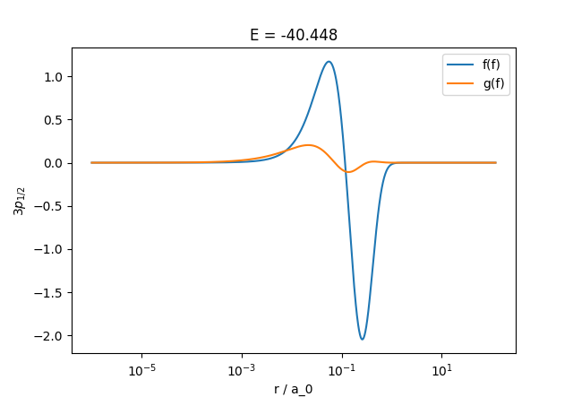
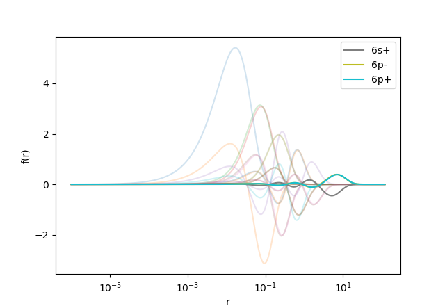

JSON output and scripting with ampsci.
ampsci can write certain output data to a JSON file, which can be handy if trying to use computed wavefunction in, e.g., a python script.
This is done by setting json_out to true in the main Atom{} block:
Atom{
Z;
A;
varAlpha2;
run_label;
json_out;
}
The output filename will be <identity>.json, where:
<identity> = atomic_symbol + Z_ion + b + q + label
- atomicSymbol, e.g., 'Cs'
- Z_ion is ionisation degree for Core (often 1)
- b and q, charecters if Breit/QED is included
- label is optional run_label
String input, json output
- This can be particularly useful when combined with ampsci's string input option.
- Instead of putting inputs into a file, they can be sent in as a formatted string.
- This can be useful if running ampsci from a script.
- For example:
./ampsci -s "Atom{Z=Cs; json_out=true;} HartreeFock{Core=[Xe]; valence=6sp;}"
This should produce output: Cs1.json
Output format and example
Output format is described by a top-level metedata field:
"metadata": {
"description": "This JSON object contains atomic structure data including radial grid, nuclear properties, and wavefunctions.",
"nucleus": {
"A": "Mass number",
"I": "Nuclear spin (based on A)",
"L": "Orbital angular momentum, based on I and parity",
"Z": "Atomic number",
"mu": "Nuclear magnetic moment (from lookup table, based on A)",
"parity": "Nuclear parity (+1 or -1), based on A",
"r_rms": "RMS charge radius [fm]"
},
"radial": {
"dr": "Step size between radial points [a.u.]",
"r": "Array of radial grid points [a.u.]"
},
"wavefunctions": {
"core": "Core wavefunctions",
"example": "To get the 3p_1/2 core energy: json['wavefunctions']['core']['3p-']['en'] (use double quotes in real JSON)",
"muon": "Valence muonic wavefunctions",
"note": "Each of 'core', 'valence', and 'muon' contains a 'list' of orbital labels (e.g., '2s+'), and corresponding entries/orbtials keyed by those labels. Each entry has the fields listed in 'orbital_fields'.",
"orbital_fields": {
"2j": "Twice the total angular momentum (integer)",
"en": "Orbital energy [a.u.]",
"f": "Upper radial component values (array over r)",
"g": "Lower radial component values (array over r)",
"j": "Total angular momentum (j = 2j / 2)",
"kappa": "Dirac angular quantum number (κ)",
"l": "Orbital angular momentum",
"n": "Principal quantum number"
},
"valence": "Valence electronic wavefunctions"
}
},
For example, to get the energy, upper radial wavefunction \(f(r)\), and dirac quantum number \(\kappa\) for the \(3p_{1/2}\) state:
import json
import numpy as np
with open("Cs1.json", "r") as f:
json_file = json.load(f)
r = np.array(json_file["radial"]["r"])
Energy = json_file["wavefunctions"]["core"]["3p-"]["en"]
kappa = json_file["wavefunctions"]["core"]["3p-"]["kappa"]
f = np.array(json_file["wavefunctions"]["core"]["3p-"]["f"])
g = np.array(json_file["wavefunctions"]["core"]["3p-"]["g"])
import matplotlib.pyplot as plt
plt.xscale("log")
plt.xlabel("r / a_0")
plt.ylabel(f"$3p_{{1/2}}$")
plt.title(f"E = {Energy:.3f} au")
plt.plot(r, f, label="f(f)")
plt.plot(r, g, label="g(f)")
plt.legend()
plt.show()
which should produce:

Another example, plots all core wavefunctions ( \(f(r)\) only) in light, and valence wavefunctions solid with labels:
core = json_file["wavefunctions"]["core"]
valence = json_file["wavefunctions"]["valence"]
core_states = core["list"]
valence_states = valence["list"]
core_f_list = [np.array(core[nk]["f"]) for nk in core_states]
valence_f_list = [np.array(valence[nk]["f"]) for nk in valence_states]
import matplotlib.pyplot as plt
plt.xscale("log")
for symbol, f in zip(core_states, core_f_list):
plt.plot(r, f, alpha=0.2)
for symbol, f in zip(valence_states, valence_f_list):
plt.plot(r, f, label=symbol)
plt.xlabel("r")
plt.ylabel("f(r)")
plt.legend()
plt.show()
which should produce:

 1.9.8
1.9.8